ภาพรวมบทนี้ Lecture 1 บอกว่า OS "virtualize CPU" ให้หลายโปรแกรมดูเหมือนรันพร้อมกัน บทนี้เจาะว่ามันทำได้อย่างไร ผ่านแนวคิดที่สำคัญที่สุดของ OS คือ process (โปรแกรมที่กำลังรัน)
เรียน: program ต่างจาก process อย่างไร, address space, Process API และการสร้าง process, process states, PCB, UNIX API (
fork,wait,exec), system call กับ dual mode (user/kernel) และ context switching ด้วย timer interruptบทนี้ตอบ 3 คำถามใหญ่: (1) Process API หน้าตาเป็นอย่างไร (2) process เข้าถึงทรัพยากรได้อย่างไร (3) OS สลับระหว่าง process ได้อย่างไร
1. The Abstraction: The Process
ทำไมต้องมี process?
- รันโปรแกรมด้วยมือเองนั้นยาก เพราะต้องทำหลายขั้นตอนและใช้ข้อมูลเยอะ (โหลดโค้ด จอง memory ตั้ง register ฯลฯ)
- Multiprogramming และ Virtualization ต้องการหน่วยที่ OS จัดการได้
- Process คือ abstraction ที่พื้นฐานที่สุด ที่ OS ให้
- Process = โปรแกรมที่กำลังรัน (a running program)
- ผู้ใช้รันหลายโปรแกรมได้ โดยไม่ต้องสนใจว่า CPU ว่างหรือไม่ เพราะ OS จัดการให้
2. Program vs Process
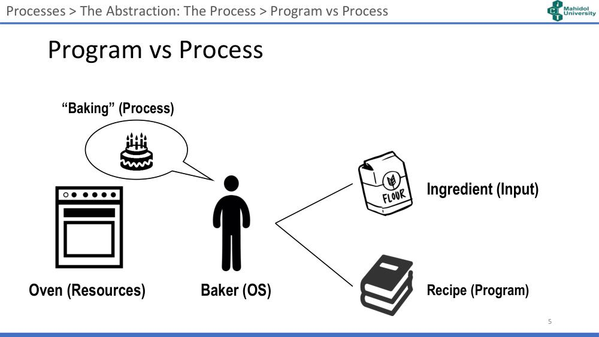
เปรียบเทียบกับการอบขนม (จากสไลด์)
| ในการอบขนม | ในคอมพิวเตอร์ |
|---|---|
| สูตร (Recipe) | Program |
| วัตถุดิบ (Ingredient) | Input |
| คนอบ (Baker) | OS |
| เตาอบ (Oven) | Resources |
| "การอบ" (Baking) | Process |
- Program คือ ลำดับคำสั่งพร้อมข้อมูล ที่เก็บเฉย ๆ อยู่บน disk (สิ่งที่อยู่นิ่ง)
- OS เป็นผู้รันโปรแกรม เมื่อรันแล้วจึงกลายเป็น process (สิ่งที่กำลังเกิดขึ้น)
⚠️ Program = static (สูตรในหนังสือ), Process = dynamic (การอบที่กำลังเกิดขึ้น) โปรแกรมเดียวรันได้หลาย process เช่น เปิด Chrome 3 หน้าต่าง
3. Under the Abstraction of the Process
3.1 Address Space of a Process
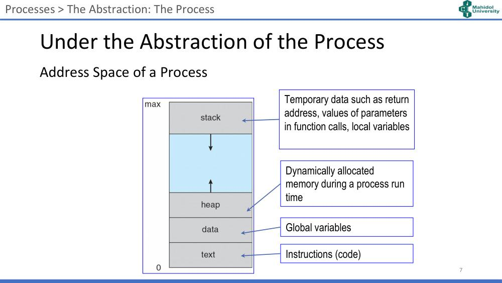
| ส่วน | ตำแหน่ง | เก็บอะไร |
|---|---|---|
| stack | บนสุด (address max) โตลงล่าง | ข้อมูลชั่วคราว เช่น return address, ค่า parameter ของ function call, local variables |
| (ช่องว่าง) | ตรงกลาง | ให้ stack และ heap โตเข้าหากัน |
| heap | โตขึ้นบน | memory ที่จองแบบ dynamic ระหว่างรัน (เช่น malloc) |
| data | global variables | |
| text | ล่างสุด (address 0) | instructions (code) |
💡 จำจากล่างขึ้นบน: T-D-H-S = Text (โค้ด) → Data (global) → Heap (malloc) → Stack (local)
3.2 Machine State
- Process ซ่อนรายละเอียดของ machine state ขณะรันโปรแกรม
- ส่วนของเครื่องที่เกี่ยวข้องกับการรันโปรแกรม:
- Instructions และ data อยู่ใน memory (address space)
- คำสั่งหลายคำสั่ง อ่านหรืออัปเดต registers:
- general purpose registers (eax, ebx, …)
- program counter (PC) — ชี้คำสั่งถัดไป
- stack pointer — ชี้ยอดของ stack
- frame pointer — ชี้ frame ของ function ปัจจุบัน
- โปรแกรมมักเข้าถึง I/O devices เช่น ไฟล์ที่เปิดอยู่
💡 machine state = "ภาพถ่าย" ของการทำงาน ณ ขณะหนึ่ง ถ้าเก็บภาพนี้ไว้ได้ ก็หยุดแล้วกลับมาทำต่อได้ (หัวใจของ context switch ในหัวข้อ 10)
4. Process Execution และ Processes in OS
4.1 Process Execution
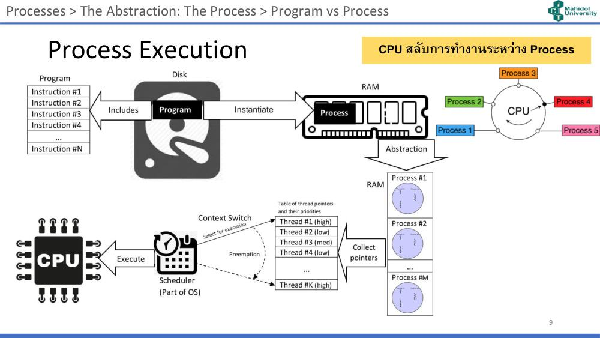
ใจความของภาพ: CPU สลับการทำงานระหว่าง Process
- Program (ชุด Instruction #1…#N) เก็บอยู่บน Disk
- OS instantiate โปรแกรมขึ้นมาเป็น Process ใน RAM (มีหลาย process: Process #1 … #M)
- OS เก็บ ตารางของ thread พร้อม priority (high/med/low) และ collect pointers ของแต่ละ process
- Scheduler (ส่วนหนึ่งของ OS) เลือกว่าจะให้ใครรัน → context switch → execute บน CPU
- อาจเกิด preemption (ถูกแย่ง CPU กลางคัน) แล้ววนเลือกใหม่
- ด้านขวาบน: CPU สลับวนไประหว่าง Process 1–5
4.2 Processes in OS
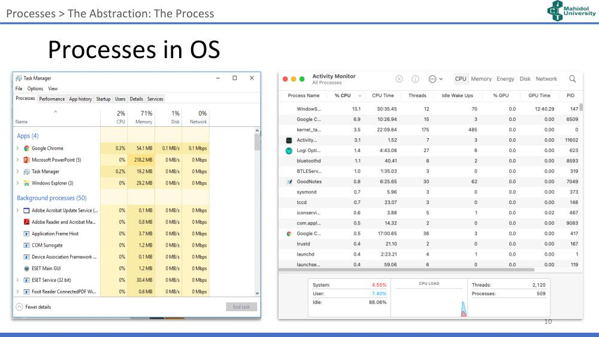
- Windows: Task Manager แสดง Apps และ Background processes พร้อม % CPU, Memory, Disk, Network
- macOS: Activity Monitor แสดง Process Name, % CPU, CPU Time, Threads, Idle Wake Ups, PID
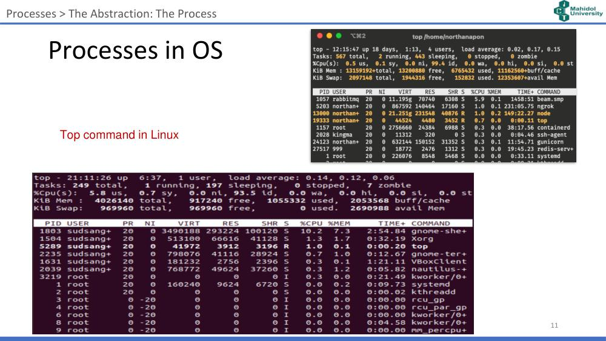
- Linux: คำสั่ง
topแสดงจำนวน tasks (total, running, sleeping, stopped, zombie), %CPU, memory และรายการ process (PID, USER, PR, NI, VIRT, RES, SHR, S, %CPU, %MEM, TIME+, COMMAND)
5. Process API และ Process Creation
5.1 Process API (ภาพรวม รายละเอียดในหัวข้อ 8)
| API | ทำอะไร |
|---|---|
| Create | เริ่มโปรแกรม → สร้าง process |
| Destroy | process ส่วนใหญ่จบเอง แต่ สั่ง kill ได้ |
| Wait | process รอ process อื่น |
| Miscellaneous Control | ควบคุมอื่น ๆ เช่น suspend (หยุดชั่วคราว) และ resume (ทำต่อ) |
| Status | ดู สถานะ เช่น run time หรือ state |
5.2 Process Creation — 4 ขั้นตอน
- OS โหลด code และ static data จาก disk เข้า memory (จัดเตรียม code, data, heap, stack)
- OS ตั้งค่า I/O เริ่มต้น ใน Unix มี 3 ตัว:
- a. standard input (stdin)
- b. standard output (stdout)
- c. standard error (stderr)
- OS ตั้งคำสั่งแรก ที่จะรัน เช่น
main() - OS ส่งการควบคุม CPU ให้ process
6. Process States
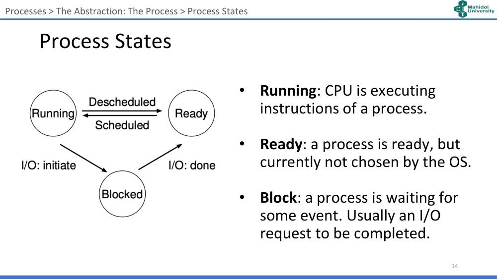
| State | ความหมาย |
|---|---|
| Running | CPU กำลังรันคำสั่ง ของ process นี้ |
| Ready | process พร้อมรัน แต่ OS ยังไม่เลือก ให้ใช้ CPU |
| Blocked | process รอ event บางอย่าง ส่วนใหญ่คือรอ I/O request ให้เสร็จ |
การเปลี่ยนสถานะ (ลูกศรในภาพ)
| จาก → ไป | เกิดเมื่อ |
|---|---|
| Ready → Running | Scheduled (OS เลือกให้รัน) |
| Running → Ready | Descheduled (OS เอา CPU คืน) |
| Running → Blocked | I/O: initiate (เริ่มสั่ง I/O แล้วต้องรอ) |
| Blocked → Ready | I/O: done (I/O เสร็จ พร้อมรันอีกครั้ง) |
⚠️ Blocked → Running ตรง ๆ ไม่ได้ ต้องกลับไป Ready ก่อน แล้วรอ OS schedule
💡 เปรียบกับร้านตัดผม: Running = กำลังนั่งตัด, Ready = นั่งรอคิว, Blocked = ไปรอสีผมให้แห้ง (ต่อให้ช่างว่างก็ยังตัดต่อไม่ได้)
ตัวอย่าง Process States
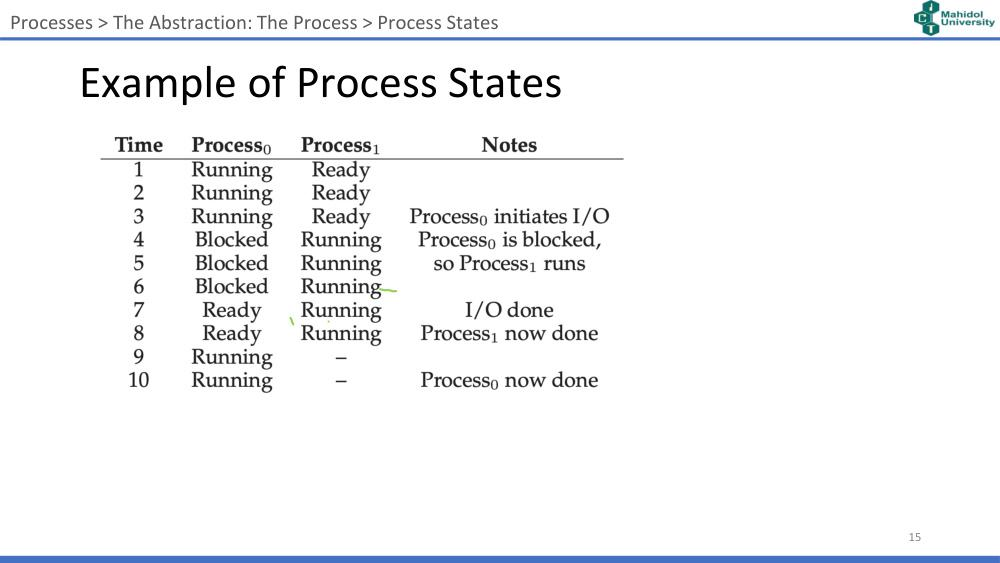
| Time | Process₀ | Process₁ | Notes |
|---|---|---|---|
| 1 | Running | Ready | |
| 2 | Running | Ready | |
| 3 | Running | Ready | Process₀ initiates I/O |
| 4 | Blocked | Running | Process₀ is blocked, so Process₁ runs |
| 5 | Blocked | Running | |
| 6 | Blocked | Running | |
| 7 | Ready | Running | I/O done |
| 8 | Ready | Running | Process₁ now done |
| 9 | Running | – | |
| 10 | Running | – | Process₀ now done |
อ่านตาราง: ตอน Process₀ รอ I/O (เวลา 4–6) OS ไม่ปล่อย CPU ว่าง แต่ให้ Process₁ รันแทน พอ I/O เสร็จ (เวลา 7) Process₀ กลายเป็น Ready แต่ยังต้องรอ Process₁ ทำเสร็จก่อน (เวลา 8) จึงได้รันต่อ
7. Process Control Block (PCB)
7.1 PCB คืออะไร
- OS ต้อง ติดตามข้อมูลหลายอย่างของ process
- เช่น ต้องรู้ state ของแต่ละ process เพื่อ schedule ได้ถูก
- OS เก็บข้อมูลเป็น โครงสร้าง (struct ในภาษา C)
- โครงสร้างของ process แต่ละตัว เรียกว่า Process Control Block (PCB)
7.2 โครงสร้าง PCB และ Process Table
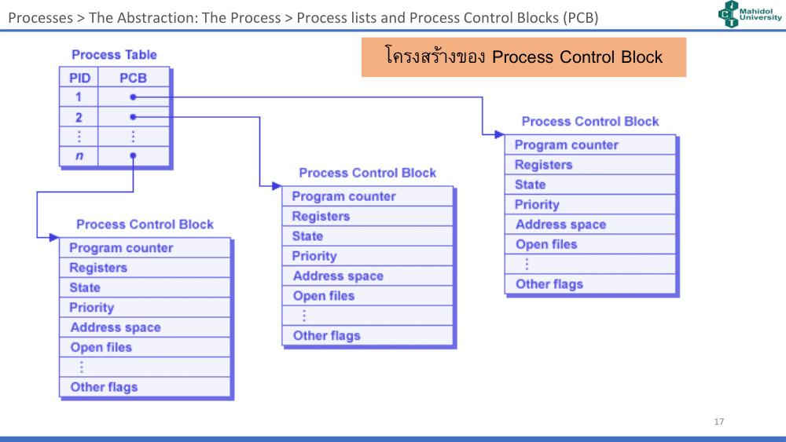
- Process Table มีแถวละ process: PID และ pointer ไปยัง PCB
- แต่ละ PCB มี: Program counter, Registers, State, Priority, Address space, Open files, Other flags
7.3 ตัวอย่างข้อมูลใน PCB
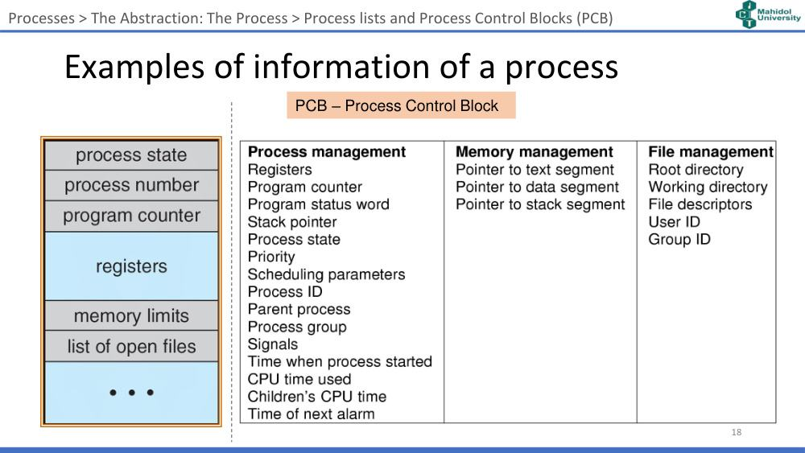
ด้านซ้ายของภาพ (ภาพรวม PCB): process state, process number, program counter, registers, memory limits, list of open files, …
| Process management | Memory management | File management |
|---|---|---|
| Registers | Pointer to text segment | Root directory |
| Program counter | Pointer to data segment | Working directory |
| Program status word | Pointer to stack segment | File descriptors |
| Stack pointer | User ID | |
| Process state | Group ID | |
| Priority | ||
| Scheduling parameters | ||
| Process ID | ||
| Parent process | ||
| Process group | ||
| Signals | ||
| Time when process started | ||
| CPU time used | ||
| Children's CPU time | ||
| Time of next alarm |
7.4 ตัวอย่าง PCB ในภาษา C (xv6)
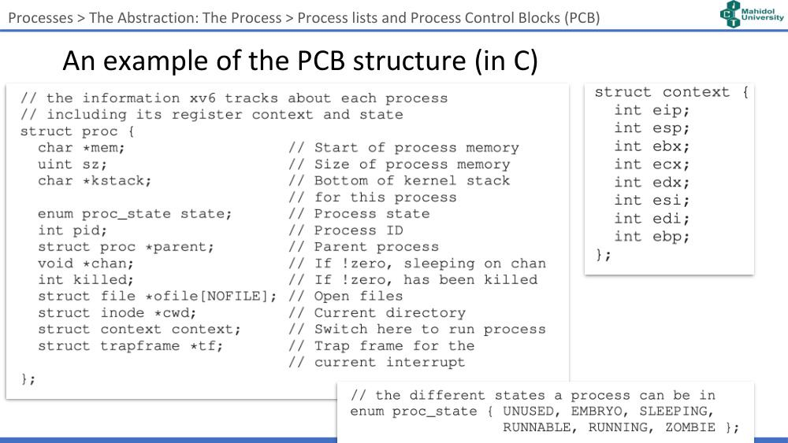
// the information xv6 tracks about each process
// including its register context and state
struct proc {
char *mem; // Start of process memory
uint sz; // Size of process memory
char *kstack; // Bottom of kernel stack for this process
enum proc_state state; // Process state
int pid; // Process ID
struct proc *parent; // Parent process
void *chan; // If !zero, sleeping on chan
int killed; // If !zero, has been killed
struct file *ofile[NOFILE]; // Open files
struct inode *cwd; // Current directory
struct context context; // Switch here to run process
struct trapframe *tf; // Trap frame for the current interrupt
};
struct context { int eip; int esp; int ebx; int ecx; int edx; int esi; int edi; int ebp; };
// the different states a process can be in
enum proc_state { UNUSED, EMBRYO, SLEEPING, RUNNABLE, RUNNING, ZOMBIE };
struct contextเก็บค่า register (eip = PC, esp = stack pointer ฯลฯ) ไว้ใช้ตอน context switch- state ของ xv6 ละเอียดกว่า 3 state ในหัวข้อ 6: UNUSED (ช่องว่าง), EMBRYO (กำลังสร้าง), SLEEPING (≈ blocked), RUNNABLE (≈ ready), RUNNING, ZOMBIE (จบแล้วแต่ parent ยังไม่เก็บผล)
8. UNIX Process API
Diving into detail — คำถามที่ 1: Process API หน้าตาเป็นอย่างไร?
8.1 ตัวอย่างโปรแกรม C ธรรมดา
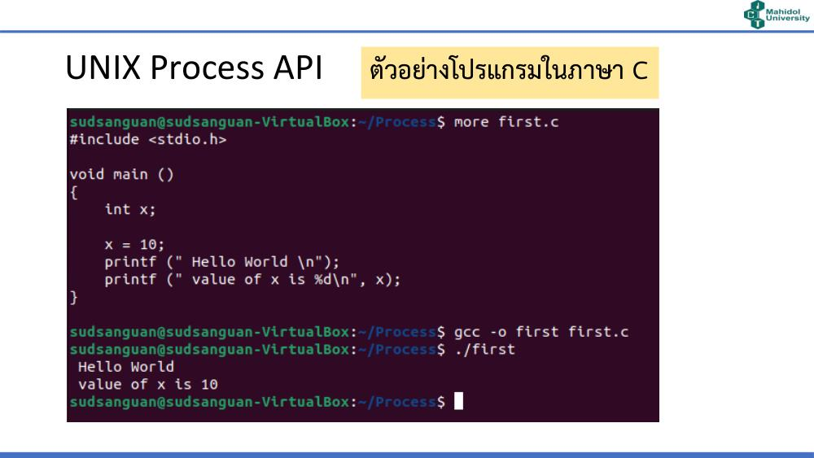
#include <stdio.h>
void main () {
int x;
x = 10;
printf (" Hello World \n");
printf (" value of x is %d\n", x);
}
คอมไพล์ gcc -o first first.c แล้วรัน ./first ได้ผล Hello World และ value of x is 10
8.2 The fork() System Call
fork()ใช้สร้าง process ใหม่- ความสัมพันธ์:
- process ที่ เรียก
fork()= parent process - process ที่ ถูกสร้าง = child process
- process ที่ เรียก
- ⚠️ child เริ่มต้นเป็นสำเนาเหมือน parent ทุกประการ!
- PID (Process Identifier) = ชื่อ (เลขประจำตัว) ของ process
- ค่าที่
fork()คืน:- คืน PID ของ child ให้ parent
- คืน 0 ให้ child
💡 เพราะ
fork()คืนค่าต่างกัน โปรแกรมเดียวกันจึงแยกทางได้ด้วยif (pid > 0)(ฝั่ง parent) กับelse(ฝั่ง child) — เหมือนแยกร่างแล้วแต่ละร่างรู้ว่าตัวเองเป็นร่างไหนจากตัวเลขที่ได้
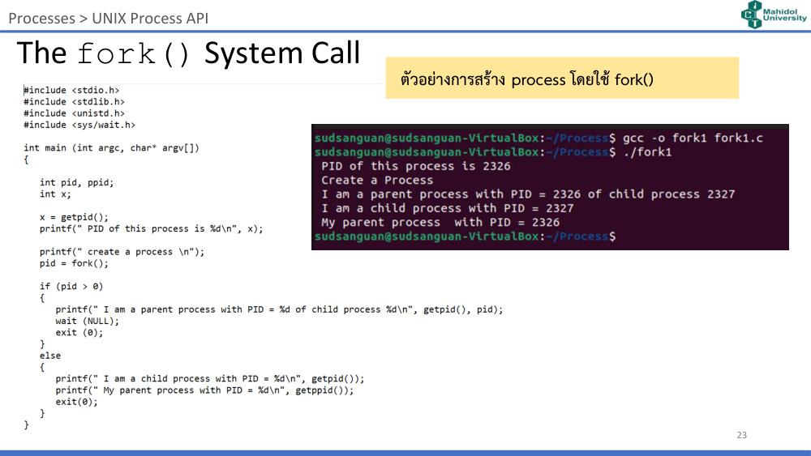
int main (int argc, char* argv[]) {
int pid, ppid;
int x;
x = getpid();
printf(" PID of this process is %d\n", x);
printf(" create a process \n");
pid = fork();
if (pid > 0) {
printf(" I am a parent process with PID = %d of child process %d\n", getpid(), pid);
wait (NULL);
exit (0);
} else {
printf(" I am a child process with PID = %d\n", getpid());
printf(" My parent process with PID = %d\n", getppid());
exit(0);
}
}
ผลลัพธ์: PID of this process is 2326 → Create a Process → I am a parent process with PID = 2326 of child process 2327 → I am a child process with PID = 2327 → My parent process with PID = 2326
getpid()= PID ของตัวเอง,getppid()= PID ของ parent
8.3 The wait() System Call
wait()ทำให้ process รอ process อื่น- มีประโยชน์เมื่ออยากให้ parent รอ child จบก่อน
- เช่น บังคับให้ child พิมพ์ก่อนเสมอ (ถ้าไม่ wait ลำดับการพิมพ์ขึ้นกับว่า scheduler เลือกใครก่อน)
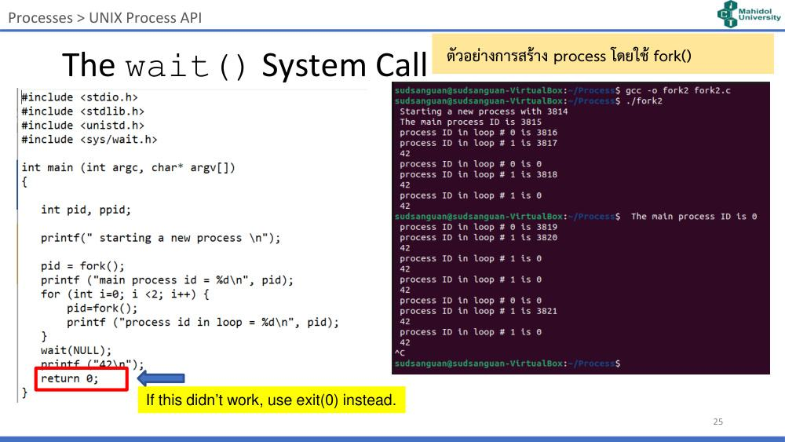
int main (int argc, char* argv[]) {
int pid, ppid;
printf(" starting a new process \n");
pid = fork();
printf ("main process id = %d\n", pid);
for (int i=0; i <2; i++) {
pid=fork();
printf ("process id in loop = %d\n", pid);
}
wait(NULL);
printf ("42\n");
return 0; // If this didn't work, use exit(0) instead.
}
- ผลลัพธ์พิมพ์ "process ID in loop # …" หลายบรรทัด และ "42" หลายครั้ง เพราะ ทุก process ที่ fork ออกมาก็รันโค้ดส่วนที่เหลือต่อด้วย process จึงเพิ่มขึ้นแบบทวีคูณ
- หมายเหตุในสไลด์: ถ้า
return 0;ใช้ไม่ได้ ให้ใช้exit(0)แทน
💡 fork 1 ครั้งก่อน loop + fork อีก 2 ครั้งใน loop → จำนวน process ทั้งหมด = 2 × 2 × 2 = 8 (คำนวณเสริม: ทุก fork ทำให้จำนวน process เป็น 2 เท่า)
8.4 Address Space of Parent and Child
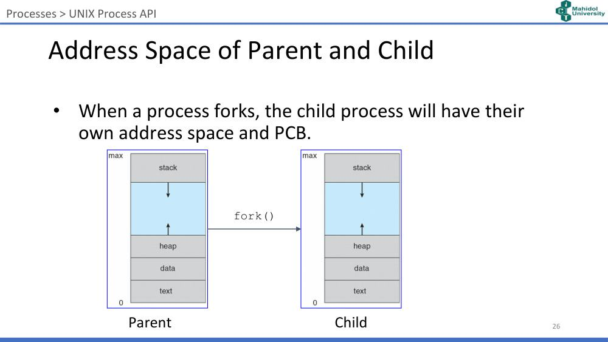
- เมื่อ fork แล้ว child มี address space และ PCB เป็นของตัวเอง (stack, heap, data, text แยกจาก parent)
- ดังนั้นถ้า child แก้ตัวแปร ค่าใน parent ไม่เปลี่ยน
8.5 The exec() System Call
exec()เป็นกลุ่ม system call ที่เปลี่ยน process ให้กลายเป็นโปรแกรมอื่น- ⚠️
exec()ไม่ได้สร้าง process ใหม่ (PID เดิม แต่เนื้อในเปลี่ยนเป็นโปรแกรมใหม่) - ⚠️ ถ้าเรียกสำเร็จ จะไม่ return กลับมา (เพราะโค้ดเดิมถูกแทนที่ไปหมดแล้ว)
6 รูปแบบของ exec:
execl(path, arg0, arg1, ..., NULL)execv(path, argv)execlp(file, arg0, arg1, ..., NULL)execvp(file, argv)execle(path, arg0, arg1, ..., NULL, envp)execvpe(file, argv, envp)
💡 อ่านชื่อ: l = ส่ง argument เป็น list, v = ส่งเป็น vector (array), p = ค้นโปรแกรมใน PATH, e = ส่ง environment เอง (คำอธิบายเสริม)
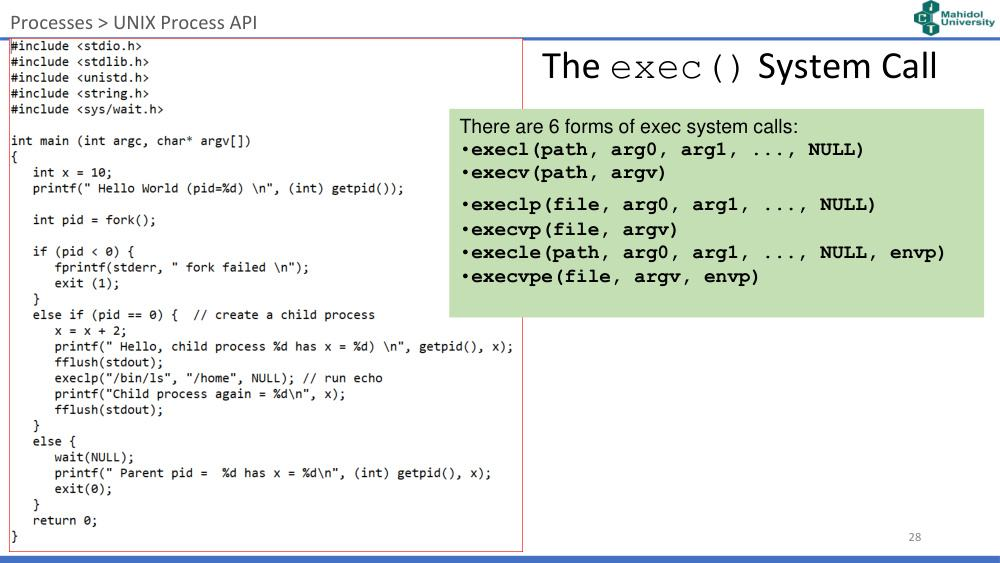
int main (int argc, char* argv[]) {
int x = 10;
printf(" Hello World (pid=%d) \n", (int) getpid());
int pid = fork();
if (pid < 0) {
fprintf(stderr, " fork failed \n");
exit (1);
}
else if (pid == 0) { // create a child process
x = x + 2;
printf(" Hello, child process %d has x = %d) \n", getpid(), x);
fflush(stdout);
execlp("/bin/ls", "/home", NULL); // run echo
printf("Child process again = %d\n", x);
fflush(stdout);
}
else {
wait(NULL);
printf(" Parent pid = %d has x = %d\n", (int) getpid(), x);
exit(0);
}
return 0;
}
สิ่งที่ต้องสังเกต
pid < 0= fork ล้มเหลว- child เปลี่ยน x เป็น 12 แต่ parent ยังเห็น x = 10 (address space แยก)
- หลัง
execlp("/bin/ls", …)สำเร็จ child กลายเป็นโปรแกรมlsบรรทัดprintf("Child process again …")จะไม่ถูกรัน - parent
wait(NULL)รอ child จบก่อน แล้วค่อยพิมพ์
💡 fork + exec คือวิธีที่ shell รันคำสั่ง: shell fork ตัวเองเป็น child แล้ว child exec เป็นคำสั่งที่เราพิมพ์ ส่วน shell (parent) wait รอ (ตัวอย่างเสริม)
9. Limited Direct Execution และ System Calls
Diving into detail — คำถามที่ 2: process เข้าถึงทรัพยากรได้อย่างไร?
9.1 Limited Direct Execution
- OS เตรียม process แล้วให้มัน รันตรง ๆ บน CPU (natively) เพื่อความเร็ว
- เรียกว่า "Direct Execution"
- แต่ OS (และ hardware) ป้องกันไม่ให้ user process เข้าถึงทรัพยากรระบบโดยตรง เพื่อความปลอดภัย → จึงเป็น "Limited"
- คำถาม: แล้ว process จะได้ทรัพยากรเพิ่ม เช่น I/O ได้อย่างไร? → ใช้ system call
9.2 Dual Mode Approach
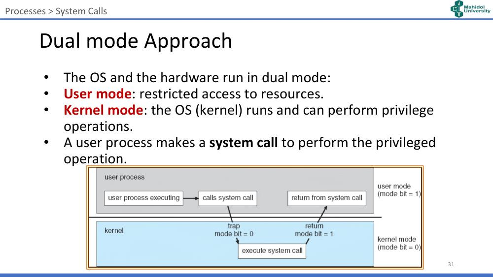
- OS และ hardware ทำงาน 2 โหมด:
- User mode: จำกัดสิทธิ์ เข้าถึงทรัพยากร (mode bit = 1)
- Kernel mode: OS (kernel) รันและ ทำ privileged operation ได้ (mode bit = 0)
- user process ทำ system call เพื่อขอให้ทำ privileged operation
ลำดับในภาพ: user process executing → calls system call → trap (mode bit = 0) → kernel execute system call → return (mode bit = 1) → return from system call
💡 เหมือนลูกค้าธนาคารที่เดินเข้าห้องนิรภัยเองไม่ได้ (user mode) ต้องยื่นคำขอที่เคาน์เตอร์ (system call) ให้พนักงานที่มีกุญแจ (kernel mode) ไปหยิบให้
9.3 Examples of System Calls
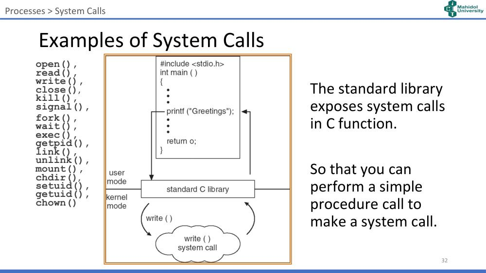
ตัวอย่าง system call: open(), read(), write(), close(), kill(), signal(), fork(), wait(), exec(), getpid(), link(), unlink(), mount(), chdir(), setuid(), getuid(), chown()
- Standard library เปิด system call ออกมาเป็น function ในภาษา C
- เราจึง เรียก system call ได้ด้วย procedure call ธรรมดา
- ภาพ:
printf("Greetings")ในmain()(user mode) → เรียก standard C library → library เรียกwrite()system call (kernel mode) → คืนผลกลับ
9.4 System Calls vs Standard Library
| System calls | Library calls |
|---|---|
open |
fopen |
close |
fclose |
read |
fread, getchar, scanf, fscanf, getc, fgetc, gets, fgets |
write |
fwrite, putchar, printf, fprintf, putc, fputc, puts, fputs |
lseek |
fseek |
⚠️
printfไม่ใช่ system call แต่เป็น library call ที่ข้างในไปเรียกwriteอีกที
9.5 ขั้นตอนของ read(fd, nbytes, buffer)
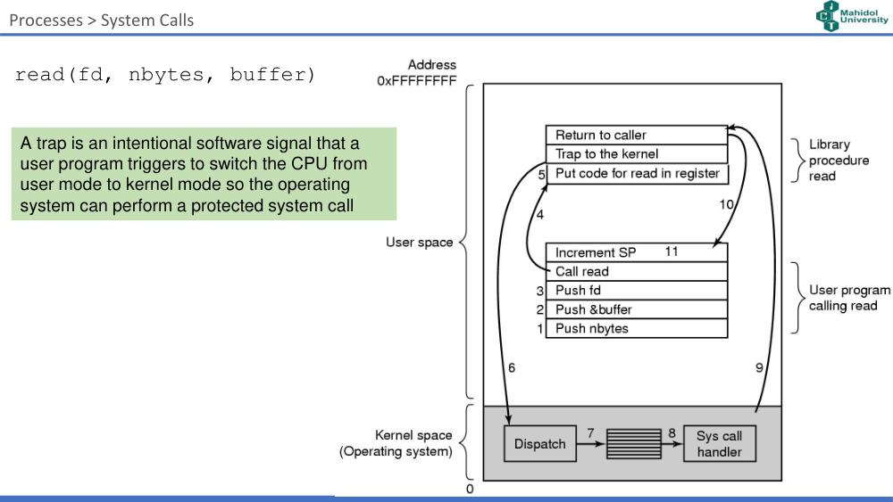
Trap = สัญญาณซอฟต์แวร์ที่ตั้งใจสร้าง โดยโปรแกรมผู้ใช้ เพื่อ สลับ CPU จาก user mode ไป kernel mode ให้ OS ทำ system call ที่ได้รับการป้องกัน
ลำดับตามเลขในภาพ (memory แบ่ง User space ด้านบน / Kernel space ด้านล่าง):
| ขั้น | ที่ไหน | ทำอะไร |
|---|---|---|
| 1–3 | User program | Push parameter ลง stack: nbytes, &buffer, fd |
| 4 | User program | Call read (เรียก library procedure) |
| 5 | Library procedure read |
ใส่รหัสของ read ลงใน register |
| 6 | Library | Trap to the kernel (สลับไป kernel mode) |
| 7 | Kernel | Dispatch ดูรหัสแล้วเลือก handler ที่ถูกต้องจากตาราง |
| 8 | Kernel | Sys call handler ทำงาน |
| 9 | Kernel → Library | คืนการควบคุมกลับ user space |
| 10 | Library | Return to caller |
| 11 | User program | Increment SP (ล้าง parameter ออกจาก stack) |
9.6 Steps of a System Call
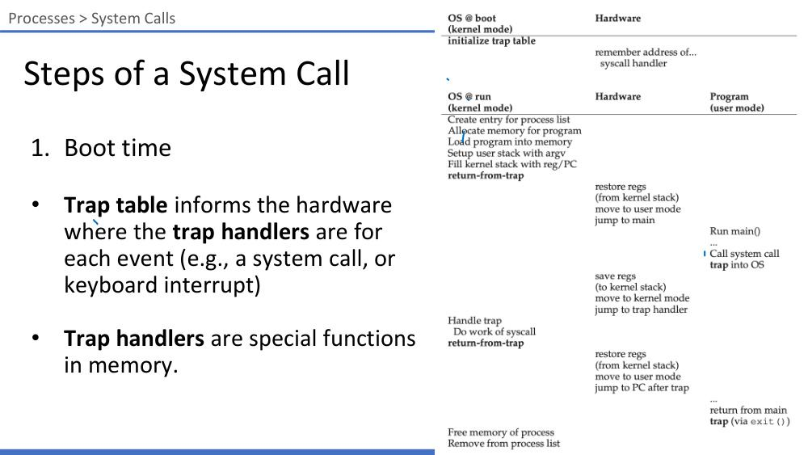
ขั้นที่ 1: Boot time (kernel mode)
- Trap table บอก hardware ว่า trap handler อยู่ที่ไหน สำหรับแต่ละ event (เช่น system call, keyboard interrupt)
- Trap handlers คือ function พิเศษใน memory
- Hardware จำ address ของ syscall handler ไว้
ขั้นที่ 2: Call system call
- Trap เข้า OS (ยกระดับสิทธิ์ – raise privilege)
- Kernel stack เก็บข้อมูลของ process ที่เรียก เพื่อให้เครื่อง กลับไปได้ถูกต้อง
- return-from-trap คือ คำสั่งพิเศษ ที่ใช้กลับไปยัง process ที่เรียก (ลดสิทธิ์ – lower privilege)
ลำดับเต็มในตาราง (Limited Direct Execution Protocol)
| OS @ run (kernel mode) | Hardware | Program (user mode) |
|---|---|---|
| Create entry for process list, Allocate memory for program, Load program into memory, Setup user stack with argv, Fill kernel stack with reg/PC, return-from-trap | ||
| restore regs (from kernel stack), move to user mode, jump to main | ||
| Run main() … Call system call, trap into OS | ||
| save regs (to kernel stack), move to kernel mode, jump to trap handler | ||
| Handle trap: Do work of syscall, return-from-trap | ||
| restore regs (from kernel stack), move to user mode, jump to PC after trap | ||
… return from main, trap (via exit()) |
||
| Free memory of process, Remove from process list |
10. Context Switching
Diving into detail — คำถามที่ 3: OS สลับระหว่าง process ได้อย่างไร?
10.1 เมื่อไหร่ OS จะได้ CPU คืน?
มีหลาย event ที่ OS ต้องตัดสินใจว่าจะให้ CPU รัน process ไหนต่อ:
- process ยอมคืน CPU เอง (yields)
- process ถูก block (รอ I/O)
- process สร้าง child แล้วรอ child จบ
- process จบการทำงาน (terminated)
⚠️ แล้วถ้า process วน infinite loop ล่ะ? มันจะไม่ yield ไม่ block ไม่จบ → OS จะไม่มีโอกาสได้ CPU คืนเลย จึงต้องมี timer interrupt
10.2 Timer Interrupt: Regaining CPU the safe way
- Timer device สร้าง interrupt ทุก ๆ ไม่กี่มิลลิวินาที
- Interrupt handler ใน OS ทำงาน
- OS ได้ CPU คืน
ตอน boot:
- OS บอก hardware ว่าเมื่อ timer interrupt ให้รันโค้ดไหน
- OS เริ่มจับเวลา (starts the timer)
💡 เหมือนครูตั้งนาฬิกาปลุกทุก 10 นาที ต่อให้นักเรียนคนหนึ่งพูดไม่หยุด พอเสียงปลุกดัง ครูก็ได้สิทธิ์พูดคืนและเลือกคนต่อไป
10.3 Saving and Restoring Context
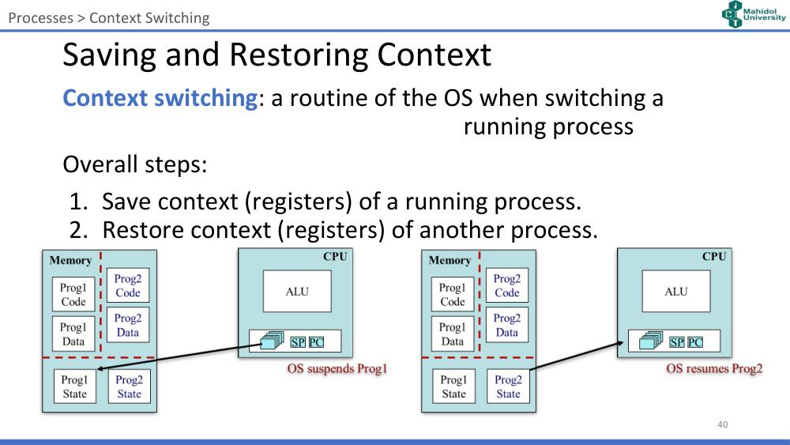
Context switching = routine ของ OS ตอน สลับ process ที่กำลังรัน
ขั้นตอนรวม:
- บันทึก context (registers) ของ process ที่กำลังรัน
- คืน context (registers) ของอีก process หนึ่ง
ภาพ: memory มี Prog1/Prog2 Code, Data และ State; CPU มี ALU, SP, PC
- ซ้าย: ค่า SP/PC ของ CPU ถูกเก็บลง Prog1 State → OS suspends Prog1
- ขวา: ค่าจาก Prog2 State ถูกโหลดเข้า CPU → OS resumes Prog2
10.4 Saving and Restoring Context (Detail steps)
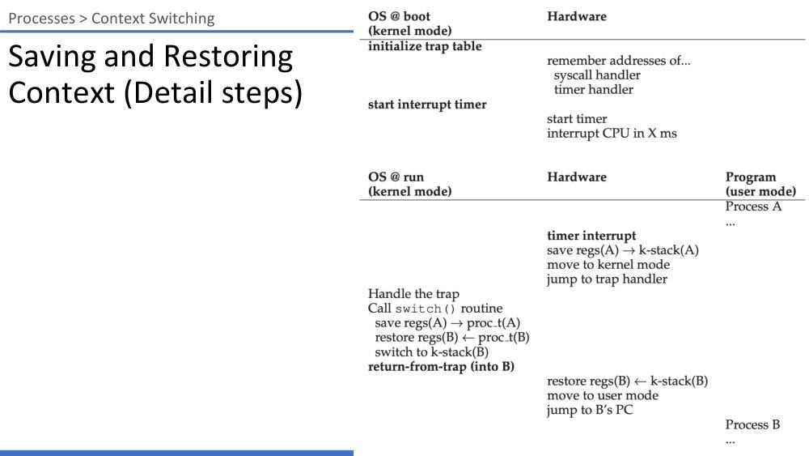
| OS @ boot (kernel mode) | Hardware | Program (user mode) |
|---|---|---|
| initialize trap table | remember addresses of syscall handler, timer handler | |
| start interrupt timer | start timer, interrupt CPU in X ms |
| OS @ run (kernel mode) | Hardware | Program (user mode) |
|---|---|---|
| Process A … | ||
| timer interrupt: save regs(A) → k-stack(A), move to kernel mode, jump to trap handler | ||
Handle the trap: Call switch() routine — save regs(A) → proc_t(A), restore regs(B) ← proc_t(B), switch to k-stack(B), return-from-trap (into B) |
||
| restore regs(B) ← k-stack(B), move to user mode, jump to B's PC | ||
| Process B … |
⚠️ มีการเก็บ register 2 ครั้ง: ครั้งแรก hardware เก็บลง kernel stack ตอน interrupt / ครั้งที่สอง OS (
switch()) เก็บลง PCB (proc_t) ตอนตัดสินใจสลับ
11. คำศัพท์สำคัญ
| คำศัพท์ | ความหมาย | จำง่าย ๆ ว่า |
|---|---|---|
| Process | โปรแกรมที่กำลังรัน | การอบเค้ก |
| Program | ลำดับคำสั่งพร้อมข้อมูล (บน disk) | สูตรเค้ก |
| Address space | พื้นที่ memory ของ process: text, data, heap, stack | บ้านของ process |
| Stack | local variables, parameter, return address | ของชั่วคราว |
| Heap | memory จองแบบ dynamic | malloc |
| Machine state | registers (PC, SP, FP), memory, I/O ที่เกี่ยวกับการรัน | ภาพถ่ายการทำงาน |
| Program Counter (PC) | ชี้คำสั่งถัดไป | ที่คั่นหนังสือ |
| stdin / stdout / stderr | I/O เริ่มต้น 3 ตัวใน Unix | เข้า / ออก / error |
| Running / Ready / Blocked | กำลังรัน / พร้อมแต่ยังไม่ถูกเลือก / รอ event | ตัดผม / รอคิว / รอสีแห้ง |
| Scheduled / Descheduled | Ready → Running / Running → Ready | ได้ / เสีย CPU |
| PCB | Process Control Block โครงสร้างเก็บข้อมูล process | บัตรประวัติ |
| Process table | ตาราง PID → PCB | ทะเบียน |
| PID | Process Identifier | เลขบัตรประชาชน |
| ZOMBIE (xv6) | process จบแล้วแต่ parent ยังไม่เก็บผล | ผีดิบ |
| fork() | สร้าง child ที่เป็นสำเนาของ parent คืน PID ให้ parent และ 0 ให้ child | แยกร่าง |
| wait() | รอ process อื่น (parent รอ child) | รอลูก |
| exec() | เปลี่ยน process เป็นโปรแกรมอื่น ไม่สร้างใหม่ ไม่ return ถ้าสำเร็จ | สวมร่าง |
| getpid() / getppid() | PID ตัวเอง / PID ของ parent | |
| Direct execution | รันโปรแกรมตรงบน CPU | รันเอง |
| Limited direct execution | รันตรงแต่ถูกจำกัดสิทธิ์ | รันเองแบบมีรั้ว |
| User mode / Kernel mode | สิทธิ์จำกัด (mode bit 1) / สิทธิ์เต็ม (mode bit 0) | ลูกค้า / พนักงาน |
| System call | ขอให้ OS ทำ privileged operation | ยื่นคำขอ |
| Library call | function ใน standard library ที่อาจเรียก system call | ตัวกลาง |
| Trap | สัญญาณซอฟต์แวร์ที่ตั้งใจสลับไป kernel mode | กดกริ่งเรียก OS |
| Trap table | บอก hardware ว่า handler แต่ละ event อยู่ไหน (ตั้งตอน boot) | สมุดเบอร์ติดต่อ |
| Trap handler | function พิเศษที่จัดการ trap | คนรับเรื่อง |
| Kernel stack | stack ของ kernel เก็บ register ของ process ที่เรียก | จดไว้ก่อนเข้าห้อง |
| return-from-trap | คำสั่งพิเศษกลับ user mode | ออกจากห้อง |
| Timer interrupt | interrupt ทุกไม่กี่ ms ให้ OS ได้ CPU คืน | นาฬิกาปลุก |
| Context switch | บันทึก register ของ process หนึ่ง แล้วคืนของอีกตัว | สลับคนเข้าเวร |
| Preemption | ถูกแย่ง CPU กลางคัน | ถูกเชิญลง |
12. สรุปท้ายบท / จุดที่มักออกสอบ
เรื่องที่ต้องจำ
- Process = running program; program = static, process = dynamic (อุปมาอบเค้ก: recipe/baker/oven/ingredient/baking)
- Address space: text (code) → data (global) → heap (dynamic) → stack (local, return address)
- Registers ที่เกี่ยว: general purpose, PC, stack pointer, frame pointer
- Process API 5 อย่าง: create, destroy, wait, miscellaneous control (suspend/resume), status
- Process creation 4 ขั้น: load code/static data → init stdin/stdout/stderr → set first instruction (main) → transfer CPU
- 3 states + 4 transitions: Ready ⇄ Running (scheduled/descheduled), Running → Blocked (I/O initiate), Blocked → Ready (I/O done)
- PCB เก็บ PC, registers, state, priority, address space, open files ฯลฯ; process table ชี้ไปที่ PCB
- fork(): child = exact copy; คืน PID ของ child ให้ parent, คืน 0 ให้ child; child มี address space และ PCB ของตัวเอง
- wait(): parent รอ child (เช่น ให้ child พิมพ์ก่อน)
- exec(): ไม่สร้าง process ใหม่, สำเร็จแล้วไม่ return, มี 6 รูปแบบ
- Dual mode: user mode (mode bit 1) vs kernel mode (mode bit 0); system call → trap → kernel → return-from-trap
- System call vs library call: open/fopen, read/scanf…, write/printf…, lseek/fseek
- read() 11 ขั้น: push params → call read → put code in register → trap → dispatch → handler → return → increment SP
- Boot: ตั้ง trap table และเริ่ม timer
- OS ได้ CPU คืนเมื่อ: yield, blocked, wait child, terminated และ timer interrupt (กัน infinite loop)
- Context switch: save regs ของ A → restore regs ของ B (hardware เก็บลง kernel stack, OS switch() เก็บลง PCB)
คู่ที่มักสับสน
| คู่ | ต่างกันที่ |
|---|---|
| Program vs Process | สูตร (นิ่ง) vs การทำตามสูตร (กำลังรัน) |
| Ready vs Blocked | รอ CPU vs รอ event/I/O |
| Stack vs Heap | local ชั่วคราว อัตโนมัติ vs จองเองแบบ dynamic |
| fork() vs exec() | สร้าง process ใหม่ (สำเนา) vs แทนที่โปรแกรมใน process เดิม |
| fork() return ให้ parent vs child | PID ของ child vs 0 |
| System call vs Library call | เข้า kernel จริง vs function ใน library ที่อาจเรียก system call |
| User mode vs Kernel mode | จำกัดสิทธิ์ (bit 1) vs สิทธิ์เต็ม (bit 0) |
| Trap vs Timer interrupt | โปรแกรมตั้งใจเรียกเอง vs hardware ขัดจังหวะตามเวลา |
แนวคิดที่ต้องอธิบายได้
- ทำไมต้องมี dual mode: ถ้าให้ user process เข้าถึง hardware ตรง ๆ โปรแกรมหนึ่งอาจทำลายข้อมูลหรือ process อื่นได้
- ทำไมต้องมี timer interrupt: ถ้า process วน infinite loop โดยไม่ yield/block OS จะไม่มีทางได้ CPU คืน
- ทำไม child แก้ตัวแปรแล้ว parent ไม่เปลี่ยน: เพราะ child มี address space แยกเป็นของตัวเอง
- ทำไมบรรทัดหลัง exec() ไม่ถูกรัน: เพราะโค้ดของ process ถูกแทนที่ด้วยโปรแกรมใหม่แล้ว
- อ่านตาราง process state: เมื่อ process หนึ่ง blocked OS ให้อีกตัวรันแทน ไม่ปล่อย CPU ว่าง